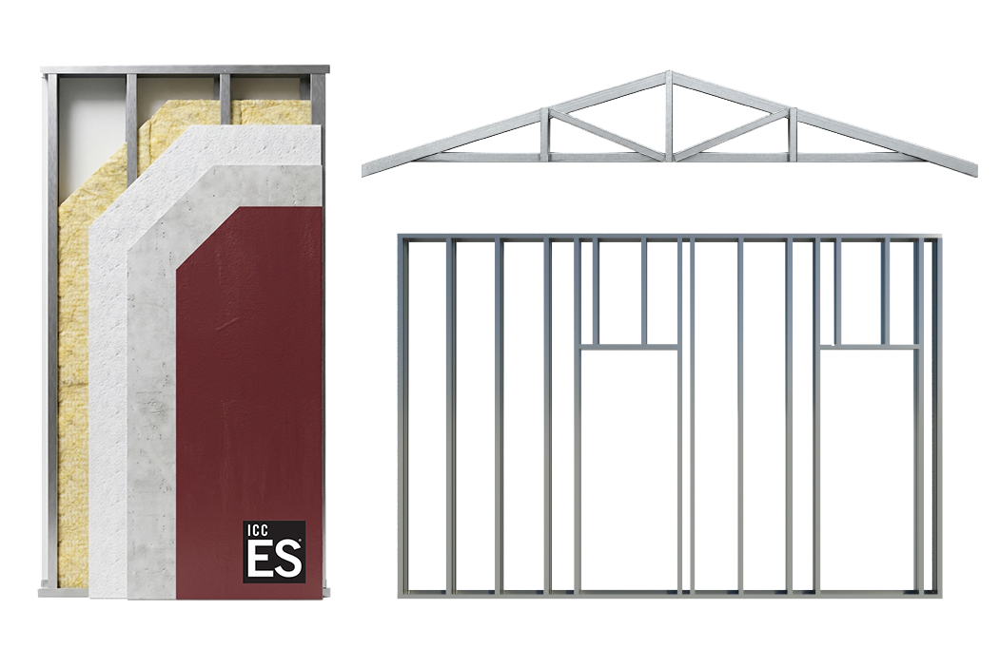

Trusted by architecture, engineering & materials partners across California


4C Construction System turns any building design into certified, manufactured, installation-ready components, one coordinated process from design through warranty, so your next project runs on a schedule and budget you can count on.
Trusted by architecture, engineering & materials partners across California
Permitting, certification, and manufacturing run at the same time instead of waiting on each other, cutting onsite construction time by up to 30% versus conventional stick-framing.
One coordinated process replaces the handoffs between architects, permitting agencies, manufacturers, and contractors, where cost and schedule risk usually piles up. Configure once, and the scope stays firm through installation.
Every component is certified, ICC-ES listed, and manufactured to a documented, repeatable standard, so what you configure is exactly what shows up on site.
Depending on your project's configuration, we produce components under one of two systems. Both are precision-engineered, factory-built, ICC-ES listed, and patent pending.
Steel-framed, fully non-combustible components rated 1-HR and 2-HR fire-resistive, WUI compliant, applicable to all construction types.

Wood-framed components optimized for Type V construction, balancing cost with thermal efficiency.

Every alternative gets part of the equation right. 4C is built to combine their strengths and eliminate their tradeoffs.
Strength: Design flexibility
Tradeoff: Field-dependent schedule, cost, and quality
Strength: Factory quality and faster site work
Tradeoff: Design, transportation, and site constraints
Strength: Faster assembly and improved performance
Tradeoff: Cost, unfamiliar, and fragmented coordination
Every project moves through the same six phases, so design intent, permitting, manufacturing, and installation stay coordinated instead of handed off between disconnected teams. See the full walkthrough on our process page.
Any design, modeled in Revit and backed by certified 4C details.
We coordinate with the full project team, city, engineers, and suppliers.
Precision factory production with modern MRP, less waste, and predictable output.
Packaged, protected, and sequenced for on-time installation.
Installed by our licensed team and coordinated with factory production and delivery.
Industry-leading warranty and support for the complete installed system.
Reduce project costs, shorten delivery timelines, and improve certainty across design, approvals, and construction.
Get a streamlined way to convert building designs into coordinated digital models, permit documentation, and manufacturable components.
Simplify procurement, reduce on-site labor, improve quality control, and accelerate installation.
From single-family fire rebuilds to multifamily infill, our components are already on the ground.

Altadena, CA

Los Angeles, CA

Escondido, CA
Panels manufactured in Hayward, delivered to a remote desert site, and assembled without heavy equipment. Here's the process, from panel layout to standing frame.
We're a California-based company that turns building designs into manufactured, certified, and installation-ready components. We take a project through Design, Coordination, Manufacturing, Delivery, Installation, and Warranty, all as one coordinated process. Learn more on our About page.
Depending on your project's configuration, we manufacture components under our 4C SAFE® (steel-framed, fully non-combustible, 1-HR and 2-HR fire-rated, WUI compliant) and 4C ECO™ (wood-framed, optimized for Type V construction) systems. Both are ICC-ES listed, patent pending, and produced to the same documented manufacturing standard.
No. Start with any building design. Our configurator converts it into defined components and specifications, so architects, owners, and developers don't need to redesign a project from scratch to work with us.
Yes. We operate a dedicated rebuild program supporting homeowners and builders in fire-affected communities including Altadena and the Pacific Palisades, with pre-designed single-family homes and ADUs optimized for our process.
We work with owners and property developers, architects and designers, and builders and general contractors. If you're a homeowner, we can connect you with a partner in your area.
We manufacture out of Hayward, CA and serve project sites statewide, with active work in the San Francisco Bay Area, Los Angeles, San Diego, Sacramento, Altadena, and Pacific Palisades. See our locations page for market-specific details.
Yes. Our project portfolio includes a time-lapse video of the Borrego Springs build, the first-ever 4C SAFE® installation, showing the full assembly process from delivery to dry-in.
Talk to our team about running your next project through our end-to-end process, from design coordination through delivery and installation.